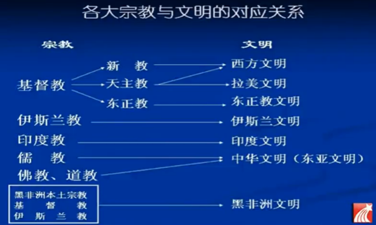
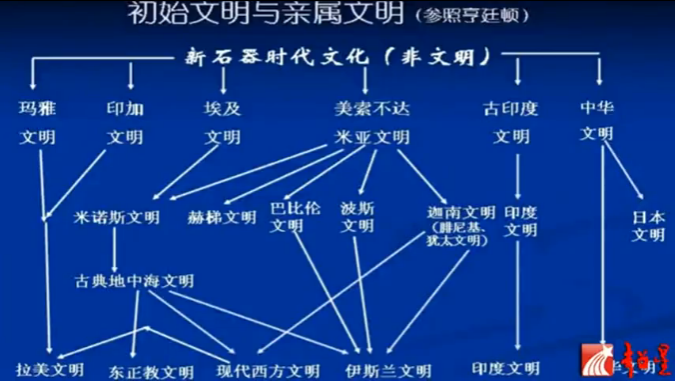
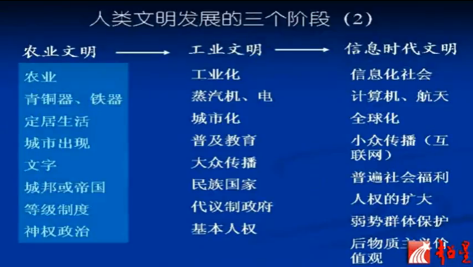

文明概念的形成与发展
文明 一词起源于拉丁文, 最初值在某特定地方居住下来的人, 引申为市民(公民), 其现代含义由18世纪欧洲人定义, 一方面用于区别之前中世纪野蛮愚昧的文明, 另一方面用于区别当时欧洲内外的文明
- 19世纪的史学家将人类社会划分为三个阶段: 蒙昧时期, 野蛮时期, 文明时期
- 文明是一种价值尺度, 它意味着人类进化发展过程中所达到的状态和发展趋势
- 文明作为价值尺度的三个内在要素:
人性的进步,人能力的提高,社会的发展.
文明的要素
人性的进步
人性的进步指的是人道主义水平的提高, 即人类兽性的消除, 对生命的珍惜和对人格的尊重. 古时部落的族人将一切外族人视作野兽, 毫无人性, 抓来就吃. 加勒比海这个词, 其实就是西方语言里对食人族一词的误写, 哥伦布发现拉丁美洲时就是把这原始部落称为食人族.
实际上奴隶制度的产生恰恰标志着人类进入文明时代, 而如何对待人类社会中的坏人, 罪犯, 又是衡量一个社会一个文明人道化水平的尺度. (酷刑, 砍头, 绞死, 枪决, 电击, 安乐死, 直至完全废除死刑, 刑罚的变化也是文明进步的体现. 甚至这种意识也扩展到对动物的保护上去, 屠宰场不能放血而要电击, 在美国实验用到的小白鼠必须先麻痹充分才能动刀子, 不然就是犯法)
达尔文提出进化论时, 很多人因为源自猴子而感到受辱. 其实, 野蛮时期的野蛮人类才是真正使人感到难堪的人类. 我们的史学, 为了强调阶级社会的残酷剥削, 而美化了原始社会, 其实原始社会那才是惨无人道的
列克星敦小桥打响了北美独立战争的第一枪, 美国人民不但在桥上为先烈立碑, 同时还在桥头的侧面为他们的敌人, 英国军人立碑纪念—-他们来自千里之外, 他们为他们的国王权力而死, 听不见大洋彼岸他们的母亲在哭泣. 战争之前是敌人, 战争之后却能用人道主义来对待, 这一点太需要中国人学习, 中国人打赢了日本人, 到现在仍然在电视剧里称其为鬼子, 把他们妖魔化. 美国人的心性, 其实普遍要比中国人高
美国为犹太人立了一座纪念碑, 来纪念二战中受迫害受屠杀的犹太人, 气氛十分凄惨, 但是纪念碑旁却有一行字: 尽管发生了这一切, 但我还是相信人性是善良的. 一个民族, 一个”邪恶”的首脑, 哪怕曾经犯下了对一个种族滔天罪行, 但是当后人提及的时候, 却能用宽容的心态来面对, 并且升华到了人性博爱的层次, 而不是复仇. 人性善恶其实没有绝对答案, 人性最光辉之处在于信念, 你若相信, 便是美好.
理想, 梦想和我们所珍惜的希望, 只有当遭遇恐怖的现实和被粉碎的时候, 才从我们心头升起
中国人占了世界五分之一的人口, 每年被判处死刑的人占了世界的九成以上. 可是民众和微博每天都还嫌处死的少呢. 只是说明了中国的文明化程度太低.美国弗吉尼亚大学32人枪杀案, 凶手犯罪后便自杀, 后来大学立了33个碑, 开追悼会, 放了33个气球, 献的是33朵花, 敲响了33下丧钟, 学生们抱头痛哭, 对记者讲的是: 我们失去了33位好同学. 死难者和凶手受到了同样的悼念, 这是一个民族的心性. 这事情要是发生在中国, 只怕真是那句冤冤相报何时了的古训了. 文明是什么, 无非是人的心肠变得越来越仁慈, 人的内心变得越来越柔软
人类能力提高
- 新石器时代是人类文明的标志青铜时代, 之后分别是铁器时代, 计算机时代, 电气时代电子计算机时代, 航天时代(生产方式分别有磨光石器, 农业, 制陶, 冶炼)
- 人类进入文明的三个核心标志: 金属的冶炼, 城市和国家的出现, 文字的出现
文明社会的发展
- 文字发明之初(在星月沃地, 美索不达米亚地区)是用来记账用的, 而汉字发明之初是用来占卜算卦用的
- 拉丁字母是现代英语的母体
- 玛雅文明的文字被西班牙殖民者视作魔鬼的文字, 基本遭到毁灭
- 南美洲印加文明在很多方面都达到了相当高的水平, 唯独没有创造文字, 通过结绳纪事(长度, 绳结位置的不同代表不同的事物)
- 社会发展的关键在于对人自由和平等的承认和保障
人类进入文明社会, 从以往的统治者驯化民众向民众驯化统治者发展
华夏文明偏安东亚, 一方面有利于文化的完整统一与延续, 另一方面不利于文明的传播, 以前东西方文明相互交流是极其困难的
宗教 是一个信仰体系, 它是对世界的根本性认识, 是对人和人生终极意义的理解, 规定着人类精神活动的发展方向.
世界三大宗教, 佛教, 基督教, 伊斯兰教, 其创始人释迦摩机, 耶稣, 默罕默德, 他们的人格特征, 和他们对人生和宇宙的理解, 整个就几乎塑造了一个文明
可以说一种宗教就间接地产生了一种或多种文明, 文明就是以一种宗教为母体的

文明有一定的继承性, 世界一共有六个初始文明

- 人类文明的三个大阶段, 分别为传统, 现代, 后现代
- 英国史学家汤因比, 将人类历史上出现过的文明分为21个或者26个, 而当代学者亨廷顿把当代文明分为8个
日本文明, 中华文明, 印度文明, 伊斯兰文明, 西方文明和东正教文明, 非洲文明, 拉美文明(算西方文明的亲缘文明)
